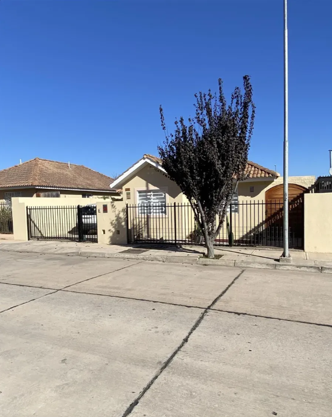
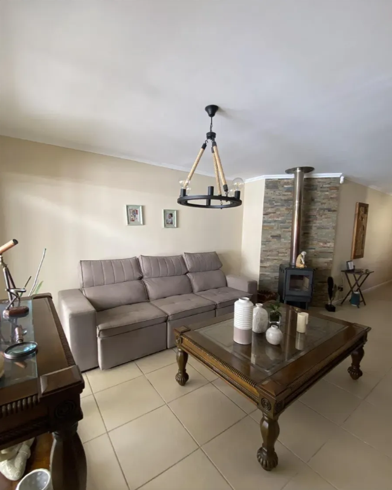
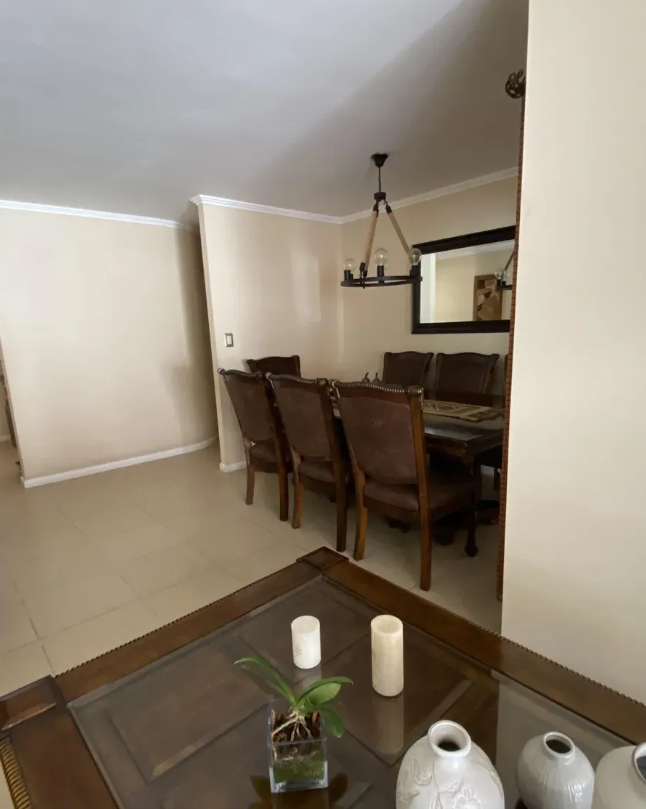
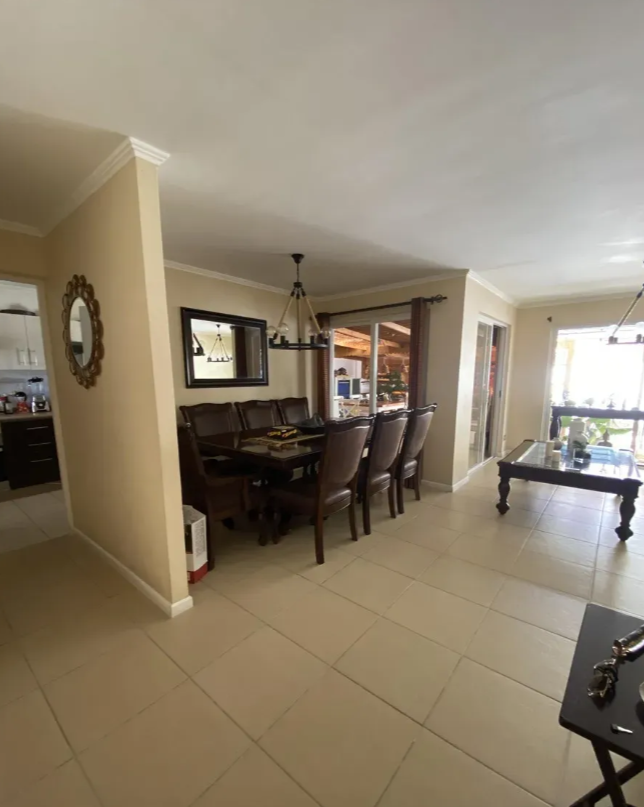
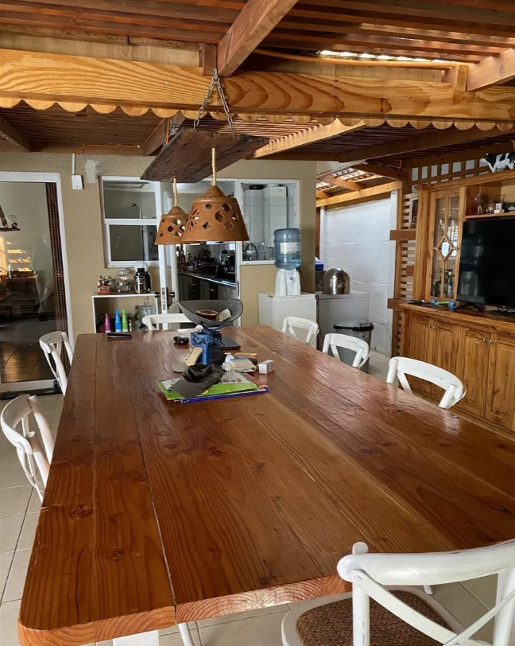
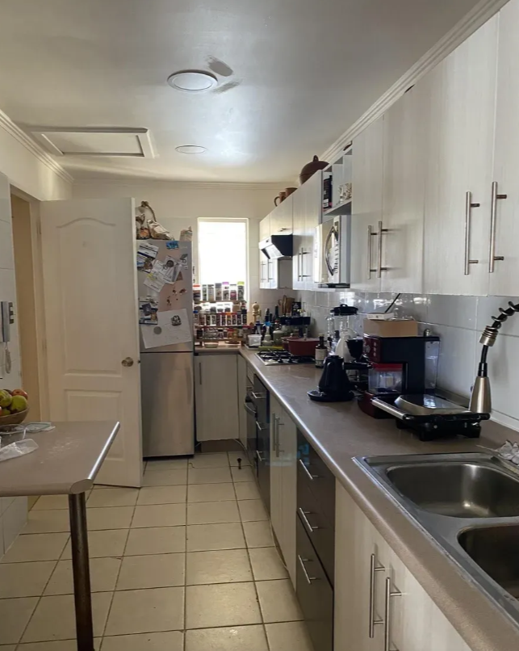
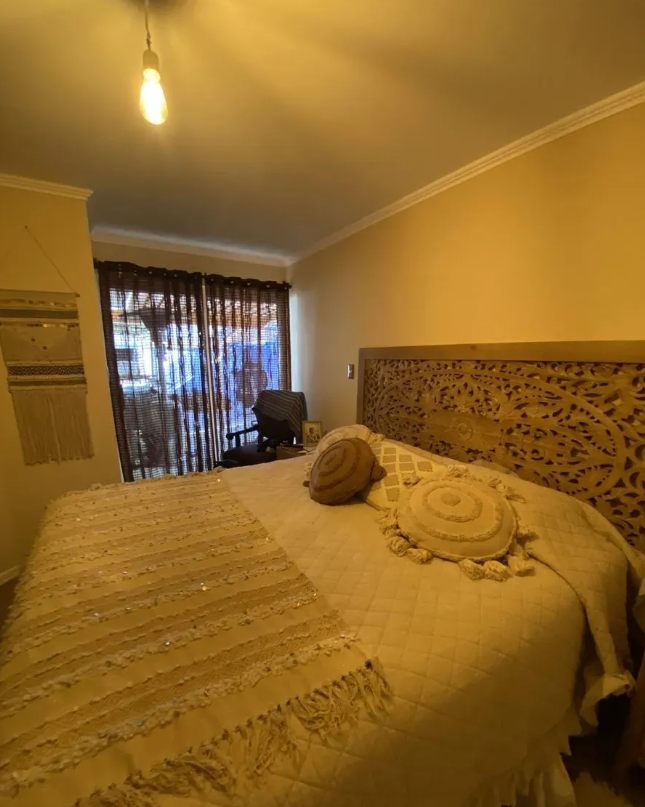
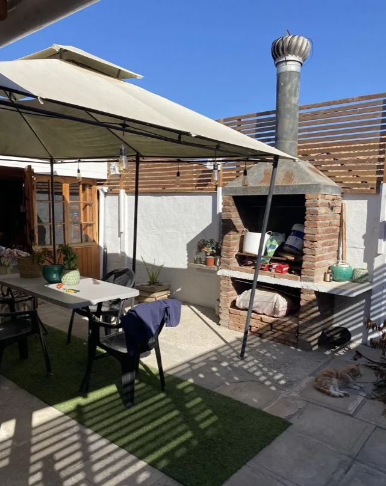
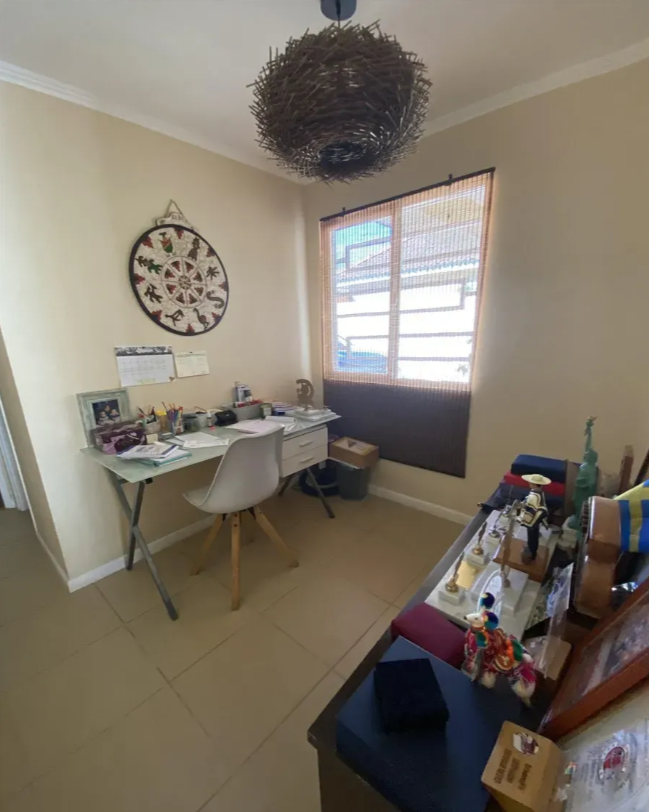
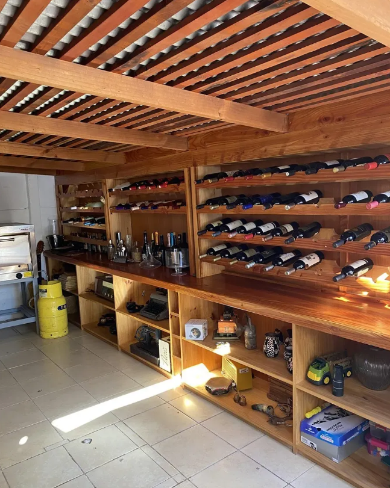
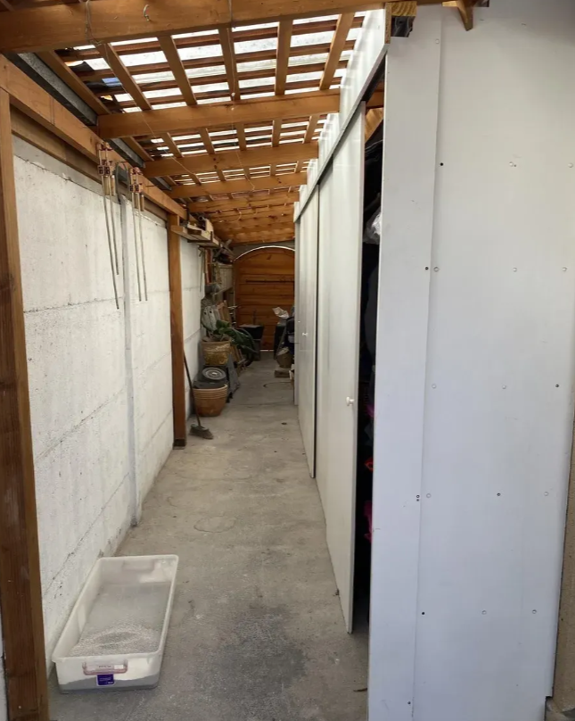
Descripción
Casa en venta en Serena Oriente, comuna de La Serena. La propiedad cuenta con 252,32 m² totales, 95 m² construidos aproximados, 3 dormitorios y una distribución funcional para vida familiar.
Ubicación
Dirección: Serena Oriente, La Serena, Coquimbo, Chile.